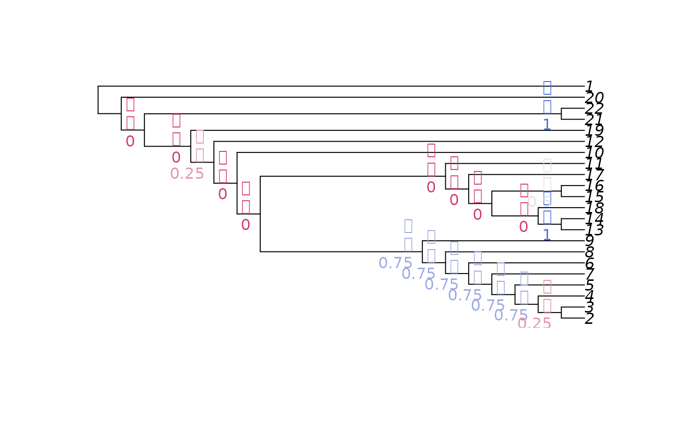
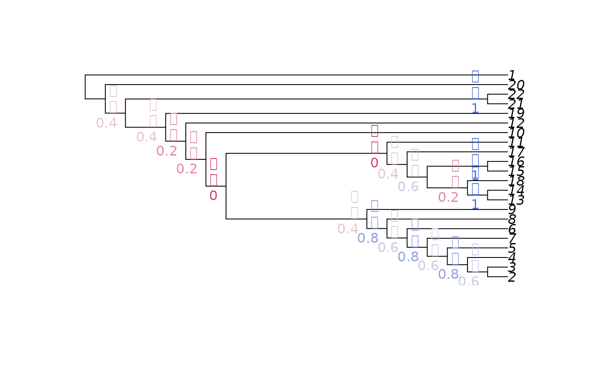
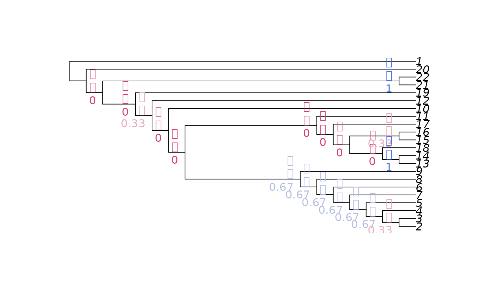

Search for most parsimonious trees using the parsimony ratchet and TBR rearrangements, treating inapplicable data as such using the algorithm of Brazeau, Guillerme & Smith (2019).
Tree search will be conducted from a specified or automatically-generated starting tree in order to find a tree with an optimal parsimony score, under implied or equal weights, treating inapplicable characters as such in order to avoid the artefacts of the standard Fitch algorithm (see Maddison 1993; Brazeau et al. 2019). The tree scoring implementation uses the MorphyLib C library (Brazeau 2017).
MaximizeParsimony( dataset, tree = NJTree(dataset), ratchIter = 12L, tbrIter = ceiling(NTip(dataset)/3), startIter = 3L, finalIter = 1L, maxHits = NTip(dataset) * 4L, quickHits = 1/3, concavity = Inf, tolerance = sqrt(.Machine$double.eps), constraint = NULL, verbosity = 2L, session = NULL ) Resample( dataset, tree = NJTree(dataset), method = "jack", proportion = 2/3, ratchIter = 1L, tbrIter = 8L, finalIter = 3L, maxHits = 12L, concavity = Inf, tolerance = sqrt(.Machine$double.eps), constraint = NULL, verbosity = 2L, session = NULL ) EasyTrees() EasyTreesy()
| dataset | A phylogenetic data matrix of class |
|---|---|
| tree | (optional) A bifurcating tree of class |
| ratchIter | Numeric specifying number of iterations of the parsimony ratchet (Nixon 1999) to conduct. |
| tbrIter | Numeric specifying the maximum number of TBR break points to evaluate before concluding each search. The counter is reset to zero each time tree score improves. One 'iteration' comprises breaking a single branch and evaluating all possible reconnections. |
| startIter | Numeric: an initial round of tree search with
|
| finalIter | Numeric: a final round of tree search will evaluate
|
| maxHits | Numeric specifying the maximum times that an optimal parsimony score may be hit before concluding a ratchet iteration or final search concluded. |
| quickHits | Numeric: iterations on subsampled datasets
will retain |
| concavity | Numeric specifying concavity constant for implied step
weighting; set as |
| tolerance | Numeric specifying degree of suboptimality to tolerate
before rejecting a tree. The default, |
| constraint | Either |
| verbosity | Integer specifying level of messaging; higher values give
more detailed commentary on search progress. Set to |
| session | 'shiny' session identifier to allow |
| method | Unambiguous abbreviation of |
| proportion | Numeric between 0 and 1 specifying what proportion of characters to retain under jackknife resampling. Note that bootstrap support is a measure of the amount of data supporting a split, rather than the amount of confidence that should be afforded the grouping. "Bootstrap support of 100% is not enough, the tree must also be correct" (Phillips et al. 2004). See discussion in Egan 2006; Wägele et al. (2009), Kumar et al. 2011. For a discussion of suitable search parameters in resampling estimates, see Müller (2005). The user should decide whether to start each resampling from the optimal tree (which may be quicker, but result in overestimated support values as searches get stuck in local optima close to the optimal tree) or a random tree (which may take longer as more rearrangements are necessary to find an optimal tree on each iteration). |
MaximizeParsimony() returns a list of trees with class
multiPhylo. This lists all trees found during each search step that
are within tolerance of the optimal score; it may contain more than
maxHits elements.
Note that the default search parameters may need to be increased in order for
these trees to be the globally optimal trees; examine the messages printed
duriung tree search to evaluate whether the optimal score has stabilized.
Resample() returns a multiPhylo object containing a list of
trees obtained by tree search using a resampled version of dataset.
Tree search commences with ratchIter iterations of the parsimony ratchet
(Nixon 1999), which bootstraps the input dataset in order to escape local
optima. A final round of tree bisection and reconnection (TBR)
is conducted to broaden the sampling of trees.
This function can be called using the R command line / terminal, or through
the 'shiny' graphical user interface app (type EasyTrees() to launch).
For detailed documentation of the 'TreeSearch' package, including full instructions for loading phylogenetic data into R and initiating and configuring tree search, see the package documentation.
Brazeau MD, Smith MR, Guillerme T (2017). “MorphyLib: a library for phylogenetic analysis of categorical trait data with inapplicability.” doi: 10.5281/zenodo.815372 , https://doi.org/10.5281/zenodo.815372.
Brazeau MD, Guillerme T, Smith MR (2019). “An algorithm for morphological phylogenetic analysis with inapplicable data.” Systematic Biology, 68(4), 619--631. doi: 10.1093/sysbio/syy083 , https://doi.org/10.1093/sysbio/syy083.
Maddison WP (1993). “Missing data versus missing characters in phylogenetic analysis.” Systematic Biology, 42(4), 576--581. doi: 10.1093/sysbio/42.4.576 , https://doi.org/10.1093/sysbio/42.4.576.
Nixon KC (1999). “The Parsimony Ratchet, a new method for rapid parsimony analysis.” Cladistics, 15(4), 407--414. ISSN 0748-3007, doi: 10.1111/j.1096-0031.1999.tb00277.x , https://doi.org/10.1111/j.1096-0031.1999.tb00277.x.
Smith MR (2019). “Bayesian and parsimony approaches reconstruct informative trees from simulated morphological datasets.” Biology Letters, 15(2), 20180632. doi: 10.1098/rsbl.2018.0632 , https://doi.org/10.1098/rsbl.2018.0632.
Egan MG (2006). “Support versus corroboration.” Journal of Biomedical Informatics, 39(1), 72--85. doi: 10.1016/j.jbi.2005.11.007 , https://doi.org/10.1016/j.jbi.2005.11.007.
Kumar S, Filipski AJ, Battistuzzi FU, Kosakovsky Pond SL, Tamura K (2012). “Statistics and truth in phylogenomics.” Molecular Biology and Evolution, 29(2), 457--472. doi: 10.1093/molbev/msr202 , https://doi.org/10.1093/molbev/msr202.
Müller KF (2005). “The efficiency of different search strategies in estimating parsimony jackknife, bootstrap, and Bremer support.” BMC Evolutionary Biology, 5(1), 58. doi: 10.1186/1471-2148-5-58 , https://doi.org/10.1186/1471-2148-5-58.
Phillips MJ, Delsuc F, Penny D (2004). “Genome-scale phylogeny and the detection of systematic biases.” Molecular biology and evolution, 21(7), 1455--8. doi: 10.1093/molbev/msh137 , https://doi.org/10.1093/molbev/msh137.
Simmons MP, Freudenstein JV (2011). “Spurious 99\% bootstrap and jackknife support for unsupported clades.” Molecular Phylogenetics and Evolution, 61(1), 177--191. doi: 10.1016/j.ympev.2011.06.003 , https://doi.org/10.1016/j.ympev.2011.06.003.
Wägele JW, Letsch H, Klussmann-Kolb A, Mayer C, Misof B, Wägele H (2009). “Phylogenetic support values are not necessarily informative: the case of the Serialia hypothesis (a mollusk phylogeny).” Frontiers in Zoology, 6(1), 12--29. doi: 10.1186/1742-9994-6-12 , https://doi.org/10.1186/1742-9994-6-12.
Other split support functions:
JackLabels(),
Jackknife(),
SiteConcordance
Martin R. Smith (martin.smith@durham.ac.uk)
if (FALSE) # launch 'shiny' point-and-click interface # Here too, use the "continue search" function to ensure that tree score # has stabilized and a global optimum has been found EasyTrees() # Load data for analysis in R library('TreeTools') data('congreveLamsdellMatrices', package = 'TreeSearch') dataset <- congreveLamsdellMatrices[[42]] # A very quick run for demonstration purposes trees <- MaximizeParsimony(dataset, ratchIter = 0, tbrIter = 1, concavity = 10, maxHits = 3, verbosity = 4)#> #> #>#>#>#>#>#>#> #> #>#>#>#> #># In actual use, be sure to check that the score has converged on a global # optimum, conducting additional iterations and runs as necessary. # Jackknife resampling nReplicates <- 5 jackTrees <- replicate(nReplicates, Resample(dataset, trees, ratchIter = 0, tbrIter = 1, maxHits = 4, concavity = 10, verbosity = 0) ) # In a serious analysis, more replicates would be conducted, and each # search would undergo more iterations. # Now we must decide what to do with the multiple optimal trees from # each replicate. # Treat each tree equally JackLabels(ape::consensus(trees), unlist(jackTrees, recursive = FALSE))#> 25 26 27 28 29 30 31 #> 0.53571429 0.53571429 0.25000000 0.25000000 0.03571429 0.64285714 0.89285714 #> 32 33 34 35 36 37 38 #> 0.50000000 0.85714286 0.60714286 0.71428571 0.78571429 0.17857143 0.53571429 #> 39 40 41 42 43 #> 0.82142857 0.46428571 1.00000000 1.00000000 1.00000000# Take the strict consensus of all trees for each replicate JackLabels(ape::consensus(trees), lapply(jackTrees, ape::consensus))#> 25 26 27 28 29 30 31 32 33 34 35 36 37 38 39 40 41 42 43 #> 0.4 0.4 0.2 0.2 0.0 0.4 0.8 0.6 0.8 0.6 0.8 0.6 0.0 0.4 0.6 0.2 1.0 1.0 1.0# Take a single tree from each replicate (the first; order's irrelevant) JackLabels(ape::consensus(trees), lapply(jackTrees, `[[`, 1))#> 25 26 27 28 29 30 31 32 33 34 35 36 37 38 39 40 41 42 43 #> 0.8 0.8 0.4 0.4 0.0 0.6 0.8 0.6 1.0 0.6 0.8 1.0 0.4 0.6 0.8 0.6 1.0 1.0 1.0# Tree search with a constraint constraint <- MatrixToPhyDat(c(a = 1, b = 1, c = 0, d = 0, e = 0, f = 0)) characters <- MatrixToPhyDat(matrix( c(0, 1, 1, 1, 0, 0, 1, 1, 1, 0, 0, 0), ncol = 2, dimnames = list(letters[1:6], NULL))) MaximizeParsimony(characters, constraint = constraint, verbosity = 0)#> 1 phylogenetic tree